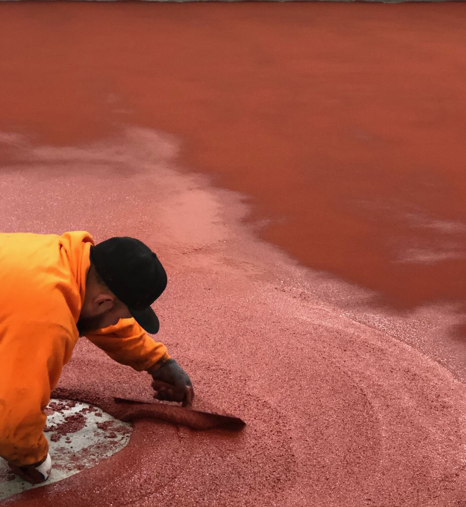

At SaniCrete, we provide a complete range of flooring solutions for food and beverage processing facilities. But our flagship product — SaniCrete STX — is the one that sets us apart from every other flooring contractor in the industry.
What Makes STX Different
SaniCrete STX features a patented helically twisted stainless steel wire strand embedded in a cementitious urethane matrix. Originally developed using seismic-resistant technology, this reinforcement system delivers impact and abrasion resistance that no unreinforced coating can match.
Applied at 3/8" thickness, STX is built to handle the most demanding environments in food processing:
- Impact resistance — Handles dropped equipment, pallet jacks, and heavy forklift traffic
- Abrasion resistance — Stands up to constant dragging, scraping, and mechanical wear
- Chemical resistance — Withstands aggressive CIP chemicals, acids, and caustics
- Thermal shock resistance — Handles temperature swings from hot washdowns to cold storage without cracking
Finish Options
STX is available with a non-slip aggregate broadcast texture for maximum traction in wet processing areas, or with a smooth sealcoat finish for areas where cleanability is the priority. The finish is customized to your facility's specific needs — different zones can have different textures within the same installation.
Installed Nationwide
SaniCrete STX has been installed in food and beverage facilities across the United States since 1990. From meat and poultry processing to dairy, bakery, seafood, and cold storage — STX has proven itself in every environment the food industry can throw at it. That's over three decades of real-world performance.